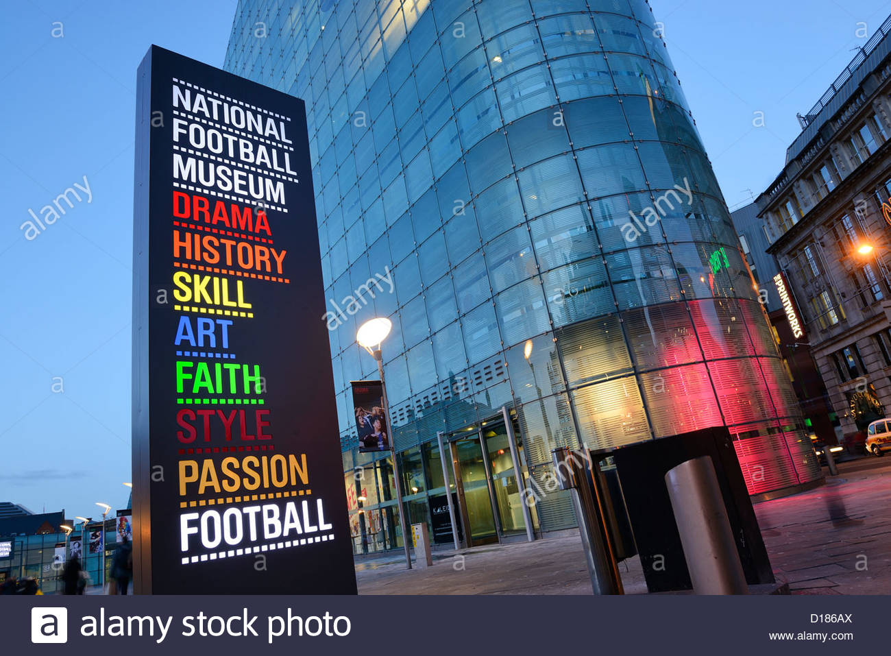

Whether you’re a die-hard football fan, planning a visit with your family or on a weekend break to the great city of Manchester, enjoy the National Football Museum which is currently open Thursday to Sunday. Delve into the social history and culture of the much-loved sport, with fascinating objects and changing exhibitions showing how football became the game of our lives. See Geoff Hurst’s red England shirt and ball from the 1966 World Cup Final, view the infamous Diego Maradona Hand of God jersey. The museum also has a statue of Lily Parr – a pioneer of women’s football. Test your skills at everything from penalty kicks and clever tricks to commentating, and get your photograph with the museum’s Premier League trophy
